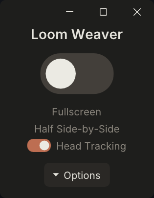
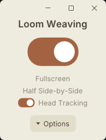
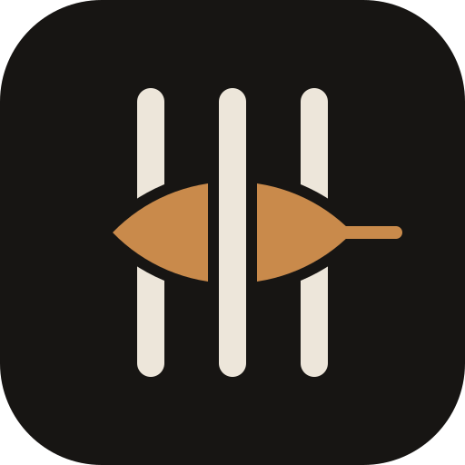
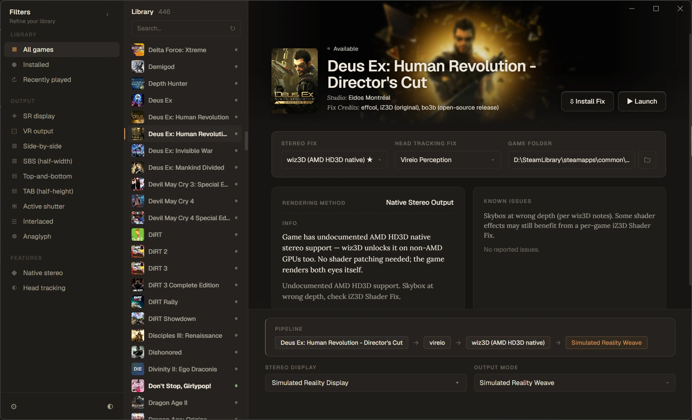
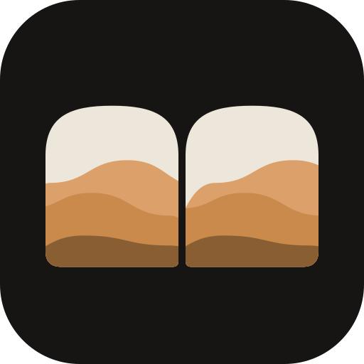

launch
Launcher
Stereopticon
Universal stereo 3D gaming hub for games, mods, shaders and fixes.
Stereopticon is the home of three open projects that put PC games into real stereo 3D: a wrapper that renders each eye, a weaver for glasses-free screens, and a launcher that ties them together.
wiz3D · LGPL-2.1 / Stereopticon · LGPL-2.1 / Stereo Loom · MIT
This mark is a real stereo pair. Relax your eyes into parallel view and the far hills drop back.
Stereo screenshots from games running with wiz3D and the native HD3D and 3D Vision paths. They open in cross-eyed view. Switch to wiggle to see the depth without any practice, or pick red/cyan glasses or a 3D TV.
Loading screenshots…
Each project works on its own. Together they cover the whole path from picking a game to seeing it in depth on your display.
Universal stereo 3D gaming hub for games, mods, shaders and fixes.
Universal stereoscopic 3D wrapper for DirectX, OpenGL, HD3D and 3D Vision.
Weaves any stereo format onto glasses-free 3D displays.
wiz3D
We See 3D
A compatibility layer for stereoscopic 3D.
wiz3D sits between a game and the graphics API and renders the scene twice, once for each eye. It treats stereo the way Proton treats Windows games on Linux: one shared layer with per-game profiles, instead of a separate hack for every title.
It carries on the iZ3D driver lineage, rebuilt on the open iZ3D codebase. When a game needs help, fixes go into the engine first. Shader fixes are the last line of defence, and they live in the shared profile.



Stereo LoomWeaves any stereo format onto glasses-free 3D displays.
Eye-tracked 3D monitors expect their own interleaved image. Stereo Loom takes an ordinary side-by-side stereo picture and hands it to the display's weaver, so games and players that already output stereo just work.
It switches the display into 3D through the LeiaSR SDK directly, with no overlay window sitting on top of your game. It is MIT licensed so display makers and other projects can build it in.


StereopticonOne place to play your library in 3D.
The Stereopticon app is a hub for stereo 3D gaming. It finds your games, sets up the right wrapper, mods, shaders and fixes for each one, and sends the output to whatever 3D display you own.
It is the friendly front end for wiz3D and Stereo Loom, so you can get a game running in depth without editing config files by hand.
Stereopticon is a small group of volunteers. Support pays for development time, test hardware and the occasional game licence for testing.
We are setting up a home for project funding. Until then, you can support development through GitHub Sponsors.
Every game the community has listed for wiz3D, how well it runs in stereo, and which folder to install. Results come from player reports in the wiz3D repository.
| Game | API | Stereo source | Status | Notes |
|---|
These games are not supported. Most have anti-cheat that could ban your account, or already output their own stereo 3D that works better.
Tested a game? Open an issue with the game, the wiz3D folder you used, your output mode and what you saw. A stereo screenshot helps a lot.
Where each graphics API stands in wiz3D today, and what is still to come. Bars show reported results for games on that path.
Milestones from the wiz3D repository, refreshed every day. Each bar is the share of a milestone's issues that are closed.
Stereo injector. For games that were never made for 3D. wiz3D loads as a proxy DLL next to the game, finds the camera in the game's rendering, and draws the scene again from a second eye position.
Native stereo capture. For games that already render two eyes for AMD HD3D, NVIDIA 3D Vision or OpenGL Quad-Buffer Stereo. wiz3D switches that rendering back on and sends both eyes to a modern output mode, so old 3D support works on today's displays.
Most games work with wiz3D's built-in engine profiles. When one effect is wrong, you can find the shader behind it and fix just that effect, with a few lines of XML and no restart.
Work from the top. Each step is cheaper and safer than the one after it.
Find the game in Game compatibility and copy the contents of the listed folder next to the game's .exe. Set the game to fullscreen at your display's resolution first.
BaseProfile.xml ships coverage for UE3, UE4, CryEngine, RAGE, Dunia, Snowdrop, id Tech 4 and 5 and more than 15 other engines. On DX10/11, 37 constant-buffer features edit the camera matrices before the right eye draws, so the game's own shaders produce correct stereo without changes.
Use Numpad + and Numpad − for separation, and Shift with the same keys for convergence. Save up to three presets on Numpad 7, 8 and 9. Some "broken" games only need different convergence.
Go to a scene with the broken effect and press Ctrl+Numpad 0. Step through this frame's shaders with Numpad 1 and Numpad 2. When the broken effect disappears, you have found it. Press Numpad 3 to save a report with its CRC and a ready-made fix skeleton.
Most problems are HUD or 2D elements at the wrong depth. Add <SkipStereo/> for that CRC to draw it the same in both eyes. In hunt mode, Numpad 4 does this for you and saves it to UserProfile.xml.
If mono is wrong too, use a primitive that moves the shader's depth instead: sprite depth, a fixed depth, depth read from a constant buffer, or a per-eye UV shift. See the list below.
Press Ctrl+F5 to reload BaseProfile.xml in game. When it looks right, send your <Profile> block as a GitHub issue or pull request so every player gets it in the next release.
The same keys as HelixMod and 3Dmigoto, so shader hackers don't have to learn a new layout. Works on DX9 and DX11.
| Key | What it does | APIs |
|---|---|---|
| Ctrl+Numpad 0 | Enter or leave hunt mode. A HUNT strip shows at the bottom of the screen. | DX9, DX11 |
| Numpad 1 / Numpad 2 | Previous or next shader. The selected one flashes on and off twice a second. | DX9, DX11 |
| Numpad 3 | Save a report to wiz3D_Shaders\<Game>\Hunter\ with the disassembly, constant-buffer hints and a suggested fix. | DX9, DX11 |
| Numpad 4 | Force the selected shader to mono and save it to UserProfile.xml. Press again to undo. | DX9, DX11 |
| Numpad 5 | Switch between whole shaders and single draws, for shaders that draw several different things. | DX11 |
| Ctrl+F5 | Reload BaseProfile.xml without restarting the game. | All |
Every shader a game creates gets an ID: a CRC32 checksum of its bytecode, written as eight hex digits such as 0x1D9628E2. Fixes are keyed to that ID, so a fix applies to exactly one shader and nothing else.
wiz3D uses the standard IEEE CRC32 on both DX9 and DX11. It matches HelixMod's DX9 file names, so you can look up a CRC from a HelixMod fix list without re-hashing.
3Dmigoto and geo-11 use a different 64-bit hash, written as 16 hex digits. Those IDs do not match wiz3D's, even for the same shader.
<Profile Name="Example Game">
<File Name="game.exe"/>
<ShaderPatch CRC="0x1D9628E2" Stage="VS" Note="Minimap compass">
<SkipStereo/>
</ShaderPatch>
</Profile>
Each primitive goes inside a <ShaderPatch CRC="…"> block. No HLSL needed. Most are DX11 only for now; they are in the 0.4.3 and 0.5.0 builds.
Draws the shader the same in both eyes. Fixes most HUD, crosshair and overlay problems.
<SkipStereo/>
Applies a fix only when a given texture is bound, for shaders that draw several things. Find the texture with draw-level hunting.
<When TextureCRC="0x8F3A21BC"><SkipStereo/></When>
Puts a 2D sprite at the depth of the scene behind it, so it sits on the thing it marks.
<SpriteDepth TexSlot="3" DepthReg="o0" DepthComponent="z"/>
Pins a shader's output to one depth, or to the screen plane.
<FixedDepth Value="0.5"/>
Reads the depth to use from a constant-buffer slot and offset.
<DepthFromCB Slot="1" OffsetBytes="48"/>
Moves depth from a start to an end value, driven by a progress value the game already tracks.
<AnimateDepth ProgressCB="2" OffsetBytes="16" Start="0.0" End="1.0"/>
Offsets an output coordinate per eye. Use for screen-space effects drawn at the wrong depth.
<ShiftUV OutputReg="o1" Component="x" Amount="0.004"/>
A preset shift for layered 2D games, so background layers sit behind foreground ones.
<ParallaxLayer/>
Swaps in a different pre-rendered texture for the right eye.
<PerEyeTexture Slot="0" LeftCRC="0x…" RightCRC="0x…"/>
Writes one value into the right eye's constant buffer.
<OverrideCBValue Slot="2" OffsetBytes="64" Value="0.25"/>
Planned: <InjectMath> for small bytecode edits, <ReplaceShader> with an LGPL template library, a 2D-to-3D parallax primitive for emulated collections, and DX9 versions of the depth primitives.
DX9 and DX8 use the iZ3D profile tags in BaseProfile.xml: <Mono> turns stereo off for a shader, <Multiplier> and <ConvergenceShift> change stereo strength per shader, and <Matrices> tells wiz3D which matrix is the projection. ShaderHunter gives you the CRC; you paste it into the right tag.
DX7 has no programmable shaders. Stereo comes from adjusting the fixed-function projection, so there is no shader fix layer.
<Profile Name="Example Game">
<File Name="game.exe"/>
<Mono>
<VertexShader CRC="0xA3B5F218"/>
</Mono>
</Profile>
Settings in wiz3D_Config.xml under <GlobalSettings>. They slow the game down, so turn them off again for play.
| Setting | What it gives you | APIs |
|---|---|---|
DumpVS="1", DumpPS="1" | Every shader the game creates, written to wiz3D_Shaders\<Game>\Dump\. Useful for matching a known HelixMod fix by CRC. | DX9, DX10/11 |
CollectDebugInformation="1" | Constant-buffer layouts and camera-matrix candidates in wiz3D_proxy.log. The main aid for writing an engine profile. | DX10/11 |
VerboseFrameTrace="N" | A draw-by-draw timeline for N frames, starting at FrameTraceStartFrame. | DX10/11 |
WIZ3D_FORCE_DUMP=1 | Environment variable that turns dumping on for every game, for people writing fixes. | DX9, DX10/11 |
Open an issue or pull request with the game name, your <Profile> block and a short note on what it fixes. Merged profiles ship to every player in the next release.
The output modes wiz3D can send to your display, and how much real stereo a web browser can show you.
Wiggle mode flips between the two eyes so anyone can see the depth without special hardware. Switch modes to try anaglyph glasses, free-viewing or a 3D TV. Open your own wiz3D screenshot to check it.
Browsers have no access to 3D Vision, Quad-Buffer Stereo or a display's eye tracking. Everything else either works anywhere or works with some care.
| Viewing method | In a browser | What you need |
|---|---|---|
| Wiggle | Works anywhere | Nothing. The default on this site. |
| Red/cyan anaglyph | Works anywhere | Red/cyan glasses. Colours shift. |
| Cross-eyed or parallel free-view | Works anywhere | Practice. Keep the image small for parallel viewing. |
| Side-by-side or top-and-bottom | Works in fullscreen | A 3D TV or projector set to its SBS or TAB mode. |
| Row or column interleaved | Works with care | Fullscreen at native resolution with 100% display scaling, so each row lands on one physical pixel row. |
| VR headset | Planned | A browser with WebXR, such as Meta Quest Browser. Each eye gets its own image. |
| Eye-tracked glasses-free displays | No | Weaving needs the display's own runtime and eye tracker. Download the screenshot and open it in the display's viewer. |
| NVIDIA 3D Vision, Quad-Buffer Stereo | No | No browser can drive these today. Download the screenshot. |
Choose one in wiz3D_Config.xml by name or number, for example <OutputMode Value="HalfSBS"/>. Every wrapper offers the same list from 0.5.0.
| # | Name | What it does | For |
|---|---|---|---|
| 1 | HalfSBS | Half side-by-side | Any 3D TV or panel with SBS input |
| 2 | FullSBS | Full side-by-side | Displays expecting full width per eye |
| 3 | HalfTAB | Half top-and-bottom, aka Over-Under | TVs with top-and-bottom input |
| 4 | FullTAB | Full top-and-bottom, aka Over-Under | Full resolution per eye, stacked |
| 5 | Anaglyph | Red/cyan, Dubois method | Any monitor and red/cyan glasses |
| 6 | RowIL | Row interleaved | Passive 3D TVs such as LG Cinema 3D |
| 7 | ColumnIL | Column interleaved | Lenticular and column-interleaved displays |
| 8 | Checker | Checkerboard | DLP-Link projectors |
| 9 | SRWeave | Simulated Reality weave, the shipped default | Acer SpatialLabs, Samsung Odyssey 3D and other SR panels |
| 10 | Mirror | Stereo mirror | Dual-display mirror rigs |
| 11 | 3DVisionGlasses | NVIDIA 3D Vision shutter glasses | 3D Vision emitter, glasses and a 120 Hz panel, via NV3D-Lib or 3D Vision Restoration. Falls back to Half SBS. |
| 12 | Katanga | Stereo output via a shared DX11 texture | Viewing in Katanga, for example in a VR headset |
| 0 | iZ3D | Legacy iZ3D dual-panel | Original iZ3D monitors; others fall back to Half SBS |
Screenshots: press Ctrl+F12 in game. Files go to My Pictures\wiz3D Screenshots\<Game>\. Choose PNG, PNS, JPEG, JPS, BMP or DDS with <ScreenshotType>.